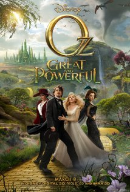

ReviewSkimmer.com
Charts
Presentation
About
Oz the Great and Powerful

"It would have been a more visually
stunning
Oz had the effects been simplified."
—
duncdonut73
"It is a
beautiful
film to look at and it is very inviting."
—
midnighttheater
"Not
bad
, but disappointing all the same."
—
TheLittleSongbird
"Williams brings humanity to her performance and the film and gives a
perfect
foil to Weisz's evil Evanora."
—
midnighttheater
"This
awful
prequel should be seen as another blemishment in Sam Raimi's career as a director."
—
hbb-hb